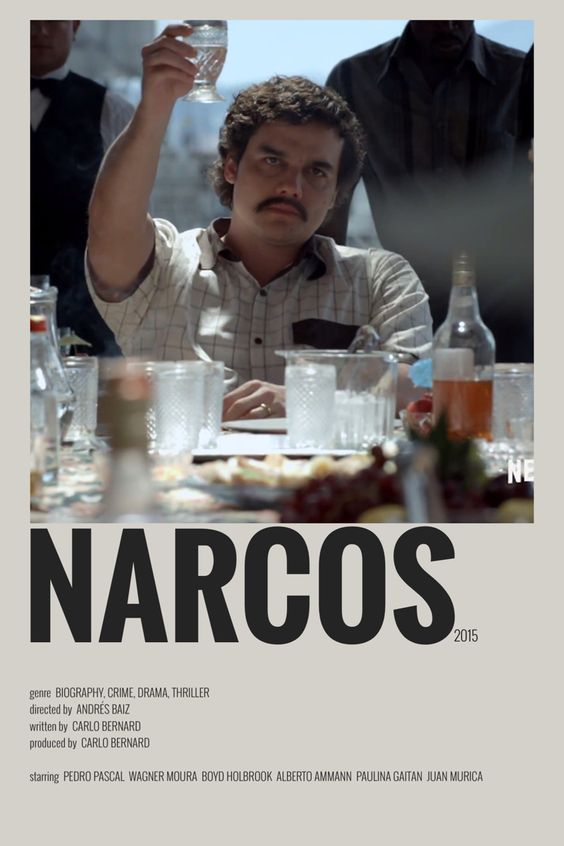

Narcos

Summary
Narcos is a crime drama television series created by Chris Brancato, Carlo Bernard, and Doug Miro. It follows the rise and fall of drug cartels in Colombia, primarily focusing on the notorious drug lord Pablo Escobar.
Cast
- Wagner Moura as Pablo Escobar
- Pedro Pascal as Javier Peña
- Boyd Holbrook as Steve Murphy
- Joanna Christie as Connie Murphy
- Paulina Gaitán as Tata Escobar
Storyline
The series depicts the efforts of law enforcement to bring down the powerful drug cartels, as well as the complex dynamics within the cartels themselves.
Episodes
- Season 1: 10 episodes
- Season 2: 10 episodes
- Season 3: 10 episodes